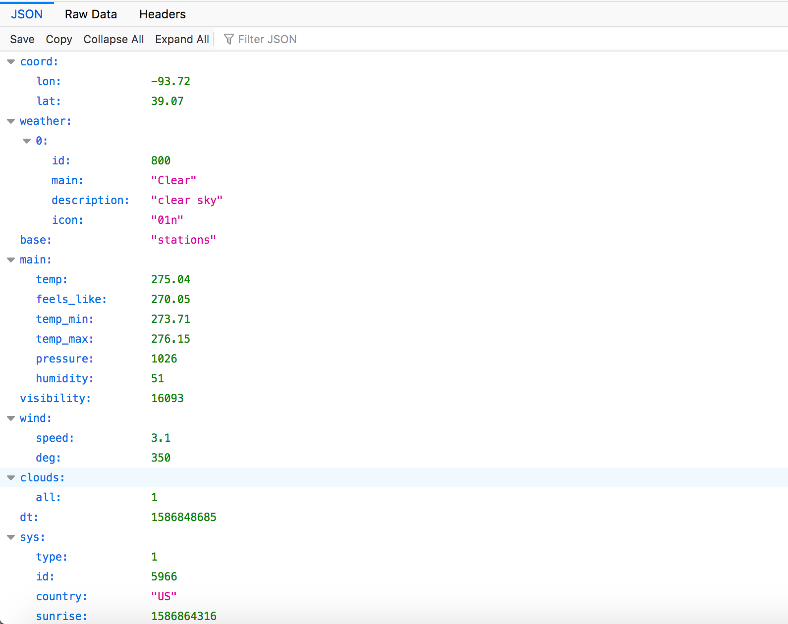

This week, our projects centered around communicating via WiFi or Bluetooth with the Huzzah Feather board. We could either have our Huzzah serve us as a server (to which we could send information) or a client, requesting information from another source (in this case, an API). I decided to try to make both happen on my board to create an interactive experience for users (well, users being... me).
I began my process by working through the literature and trying the different tutorials made available by the teaching team. I ensured that my board could connect to WiFi successfully and worked through some issues with Baud rate (very finnicky, I must say!). I then graduated on to the HTTP client tutorial, as was my area of principal interest. In lieu of working with the NWS API, I decided to go out on a limb and use the OpenWeatherMap API (which looks maybe a bit less credible a platform but still worked great). I retrieved my API key and started making calls. You can behold at the right sample JSON output from the API for Higginsville, MO. The query inputs are a city's name and the ISO 360 country code (a two letter string). The GET call returns a wealth of information, including a general description, wind speed and direction, temperature in Kelvin (no less), and visibility.
With my API up and running, I moved along into the meat of what I wanted to do. My grand vision here was to create a weather visualization station where users could put in their city and country of origin (or, in the COVID-19 era, sequestration) and visualize their weather with output devices on the Arduino board. This involved three key steps:
Above is one of my first successful API calls. To address aim number 2, I repurposed some tutorial code to open a server and receive a string from a client (in this case, my from my phone). I needed to rewrite this to house a submission form with two textboxes. The inputs to 'submit' are the country name and city name. My next big bottleneck was properly parsing the string to retrieve those query parameters. I used the substring and indexing function to find these and pull them out.
My next big step was to integrate these two functional parts (the server and client sides of things) into one functional script. With help from Nathan, I found the right order and finally had a script that did both! You can enjoy the dashing looks of my minimalist UI below. Hey, it works!
This may lead you to wonder, what about the weather visualization part? Well, I tried many different avenues and did not have all that much success. Currently, I have an RGB LED in place that identifies what type of weather a place is experiencing (green for clear, blue for rain, so on). However, I had a great deal of trouble bridging other output devices with the Huzzah -- the LED strip didn't work, and it fully rejected the Servo. However, I will keep trying to make this work and end up with a proper 'visualizer'! Below is my current situation (denoting clouds).
/// TX Code ///
const int out_pin = 9;
const int button_pin = 7;
const int pot_pin = 4;
void setup() {
pinMode(button_pin, INPUT_PULLUP);
pinMode(out_pin, OUTPUT);
Serial.begin(9600);
Serial1.begin(9600);
}
void loop() {
int pot_value = analogRead(pot_pin);
Serial.println(pot_value);
Serial1.write(pot_value/4);
int buttonState = digitalRead(button_pin);
Serial.println(buttonState);
digitalWrite(out_pin, buttonState);
delay(10);
}
/// RX Code ///
Servo myservo;
void setup() {
pinMode(7, INPUT_PULLUP);
myservo.attach(9);
Serial.begin(0);
Serial1.begin(9600);
}
void loop() {
Serial.begin(0);
Serial1.begin(9600);
while(!Serial1.available()) {
// while Serial1 feed isn't available, do nothing
}
byte rec_byte = Serial1.read();
int degree = rec_byte*90/255;
Serial.println(degree);
if (digitalRead(7)) myservo.write(degree);
}
This ended up working rather well! My goal was to use the potentiometer input to adjust trajectory and the button to fire the catapult, and the explosivity and flexibility of the servo really allowed both to happen. My first pass just attached the pea in a little 'nest' (let it be known: it's made out of a chocolate wrapper) at the end of the plastic servo arm, but I decided to extend the fulcrum for dramatic effect and farther travel. This I found truly exciting and thought that it merited a video scored by the band "Europe" (found at the bottom of the page).
Once the code was compiled and did what I wanted it to do, I did some fine-tuning to make proper adjustments to the code to fix the degree read from the potentiometer and manually adjusted to plastic turbines to properly fling the peas. The code also resets the fulcrum to its starting position, priming it to be loaded with more peas to ceremoniously fling. Naturally, I called my entire family in to behold the final product.